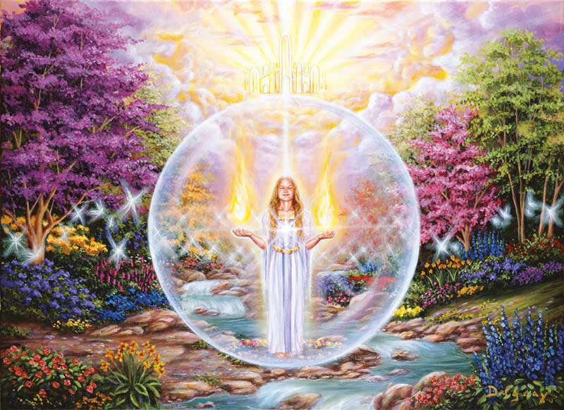
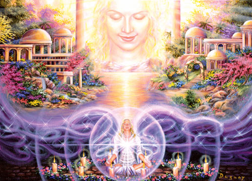

When the days become longer and there is more sunshine, the grass becomes fresh and, consequently, we feel very happy. On the other hand, in autumn, one leaf falls down and another leaf falls down. The beautiful plants become as if dead and we do not feel very happy. Why? I think it is because deep down our human nature likes construction, and does not like destruction. Naturally, every action which is destructive is against human nature. Constructiveness is the human way. Therefore, I think that in terms of basic human feeling, violence is not good. Non-violence is the only way.
Destinations
We have bigger houses but smaller families. More conveniences, but less time. We have more degrees, but less sense. More knowledge, but less judgment. More experts, but more problems. More medicines, but less healthiness.
Réservations
We've been all the way to the moon and back, but have trouble crossing the street to meet the new neighbor. We build more computers to hold more information to produce more copies than ever but have less communication.
Contact
Until you have the inner discipline that brings calmness of mind, external facilities and conditions will never bring the joy and happiness you seek. On the other hand, if you possess this inner quality, calmness of mind, a degree of stability within, even if you lack.
